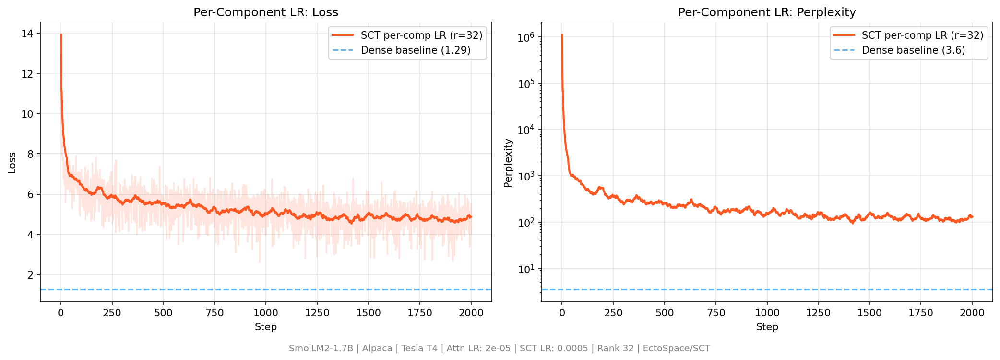

Research · Spectral Compact Training
Train big models without keeping the big matrix
SCT is a way to train neural network layers so the huge dense weight matrix never has to sit in memory. You store a small factored form instead, and you train that form directly. This page shows what was measured, what worked, and what did not.
What SCT is, in plain words
A normal neural network layer stores a big rectangle of numbers, called the weight matrix. It is often huge.
SCT never stores that full rectangle during training. It stores three smaller pieces that can rebuild the same math:
- U and V: two skinny matrices
- s: a list of singular values (importance knobs)
The name unpacks cleanly:
- Spectral: the pieces come from a truncated SVD style factorization
- Compact: you keep far fewer numbers than the full matrix
- Training: this is the live form while learning, not a zip file applied after training
This is not LoRA sitting on top of a frozen dense model. There is no big frozen weight matrix underneath. The spectral factors are the weights.
How it works
Every layer weight is kept as:
W = U · diag(s) · Vᵀ
The forward pass uses the factors only. The dense matrix is never built.
The backward pass sends gradients into U, s and V with normal backprop.
After the optimizer step, U and V are pulled back onto the Stiefel manifold with a QR retraction, so their columns stay orthonormal.
Think of working from a compressed music score and never expanding it into the full orchestra sheet.
Measured results
Everything below comes from the public SCT repository (code, logs and result files) and from an independent re-check in a separate Rust codebase. Each result says what was run, on which hardware. Pretrained SmolLM2 and Qwen2.5 models were used for the fine-tuning and weight-analysis experiments.
1. Memory per layer
For a LLaMA-70B-shaped MLP layer (8,192 × 28,672) at rank 32, dense training with Adam needs about 3,758 MB. SCT with Adam needs about 18.9 MB. That is a 199.1× cut. It is exact arithmetic about what must be stored, not a training run.
An independent Rust implementation reproduced the 199.1× ratio exactly. Scaled to a one-trillion-parameter geometry it held a whole training step in about 40 GB of resident memory, where dense would need about 16.4 TB (826×). That figure was verified from the process's real peak memory, not computed on paper.
2. A 70B-class architecture on a Steam Deck
One full training step (forward, backward, Adam, QR retraction) of an 80-layer, 8,192-wide, 70B-class architecture at rank 32. It runs on a Steam Deck CPU with 16 GB of RAM and on an M4 Pro. The model has 452 million trainable spectral parameters standing in for a 77.8 billion parameter dense equivalent.
This is an architecture memory test with no real data or pretrained weights. It shows the step fits. It is not a trained 70B model and says nothing about model quality.
3. Rank sweep: fine-tuning SmolLM2-1.7B
MLP layers (gate, up and down projections) were converted to spectral form. Attention and embeddings stayed dense. Alpaca dataset, 2,000 steps, batch 4, one A100 40 GB. Dense learning rate 2e-5, SCT learning rate 5e-4.
| Method | Params | MLP compression | Loss | Perplexity | GPU memory | Step time |
|---|---|---|---|---|---|---|
| Dense | 1,711M | 1.0× | 1.29 | 3.6 | 35.5 GB | 1.17 s |
| SCT r=256 | 692M | 5.9× | 4.33 | 75.6 | 21.3 GB | 1.05 s |
| SCT r=128 | 598M | 11.7× | 4.18 | 65.6 | 20.0 GB | 0.74 s |
| SCT r=64 | 551M | 23.5× | 4.34 | 76.7 | 19.3 GB | 0.62 s |
| SCT r=32 | 527M | 46.9× | 4.47 | 86.9 | 19.0 GB | 0.56 s |
Rank 128 was the best SCT point. Because every rank lands on a similar loss, the limit is not the MLP rank in this setup. See the independent check below for why.
4. Separate learning rates per component
A rank-32 run with learning rate 2e-5 for the dense parts and 5e-4 for U, s and V, on SmolLM2-1.7B (2,000 steps, batch 2, sequence length 256). It ran on a T4 GPU at 5.6 GB and 1.24 s per step, and ended at loss 4.50.

The report's own conclusion: the bottleneck for fine-tuning is rank capacity, not the learning rate, and fine-tuning is not where SCT is strongest at extreme compression.
5. A small fine-tune end to end
SmolLM2-135M on Alpaca, 400 steps, same seed and learning rate for both, on an Apple Silicon GPU. Pretrained weights were converted to spectral form keeping 95% of the energy.
| Method | Params | Final loss | Perplexity | Wall time |
|---|---|---|---|---|
| Dense | 134.5M | 0.236 | 1.3 | 75 s |
| SCT | 84.3M | 0.648 | 1.9 | about 500 s |
SCT used 37% fewer parameters and reached a loss about 2.7× higher. The first SCT loss spiked to 9.4 before settling. It was also about 6.7× slower in wall time at this small size, where the QR retraction cost is not hidden by the work around it.
6. Head to head with LoRA, and which layers to convert
The same SmolLM2-135M and Alpaca data, one seed and one learning rate (5e-4) for all methods, run on CPU. 360 training and 40 validation samples, so treat these as a small probe, not a benchmark. The dense run is not tuned either, and 5e-4 is high for full fine-tuning.
| Method | Trainable params | Steps | Validation loss | Perplexity |
|---|---|---|---|---|
| Dense (full fine-tune) | 134.5M | 150 | 1.94 | 7.0 |
| LoRA r=16 | 4.9M | 150 | 1.58 | 4.9 |
| LoRA r=18 (matched to SCT's MLP budget) | 5.5M | 200 | 1.67 | 5.3 |
| SCT, 95% energy | 84.3M | 150 | 3.03 | 20.6 |
Keeping 99% of the energy instead of 95% (100.8M parameters) diverged to NaN in the same setup.
A short ablation (24 steps, 20 validation samples) compared which layers to convert. Validation perplexity: attention only 131 (3.7M trainable), MLP only 1,283 (6.1M), both 1,484 (9.8M). Converting attention alone recovered fastest in that short window. It is early evidence, not a result.
One more number supports the next section. At 95% energy, every one of the 90 MLP matrices in SmolLM2-135M hit the rank cap of 128 (79.6M to 24.3M parameters, 3.3×), so the weights ask for far more than a low rank. With no cap, the same 95% rule picks ranks of 412 to 466 out of a possible 576.
7. Independent check in a separate codebase
From August to October 2026 the method was re-implemented and tested again in a separate Rust system. This was meant to find out whether the gap to dense is a bug or a fact about the problem.
- The method is sound. On a problem with a known exact answer, SCT finds the best low-rank solution. The optimizer, gradients and QR retraction are correct, and loss keeps falling as rank rises. There is no hidden floor.
- Pretrained weights are nearly full rank. Rank 32 leaves 91% to 94% of a weight matrix's energy unexplained, and rank 256 still leaves 54% to 74%. That is why every rank in the sweep lands on the same floor.
- A fine-tuning update is nearly full rank too. The change between Qwen2.5-0.5B and its Instruct version is also high rank, so a frozen base plus a small trained correction would not capture it either.
- At the same compression, 4-bit quantization keeps far more. It left about 31× less error than rank-32 or rank-64 truncation on the matrices tested.
- Training from scratch is a different story. In a small test model, a low-rank layer lost to a matched dense layer in 18 of 18 shallow pairings. In a 12-layer residual stack it won by 0.118 ± 0.014 nats over 3 seeds. A shared-basis spectral model ran 12 layers on 8,384 parameters instead of 786,432 (93.8× fewer) at better held-out loss than its matched control.
The memory claim. It is exact, independently reproduced, and works on real hardware.
Compressing an existing dense weight matrix, or its fine-tuning update, into a low rank without a large quality loss.
Whether training from scratch in spectral form can match dense at real language-model scale. Encouraging at depth in small tests, but a rank-32 1.7B-class run plateaued early.
The depth result is a known effect, a bias of low-rank models toward simple solutions. It was verified here, not discovered here. It is a local check on a small model, not a claim that every model should be low rank.
Training from scratch
SCT's original target is pre-training, so a fresh model was trained with spectral MLP layers from the first step. It is a LLaMA-style model with 24 layers, hidden size 2,048, MLP width 8,192 and a 49,152-token vocabulary, rank 32 in every MLP, on WikiText-103. It ran on an M4 Pro in bfloat16 with sequence length 256, effective batch 16 and peak learning rate 3e-4. The run was planned for 20,000 steps. The log below covers the first 5,000.
A small sanity check
On two toy problems, SCT and dense training both reach 100% accuracy on XOR. On sine regression dense reaches a final loss of 1.0e-06 and SCT 1.7e-05, with SCT about twice as slow. Early drafts of this project quoted stronger toy numbers. Those were from older runs and are not used here.
What is still open
Memory savings are real and reproducible. Everything below is the other side of the ledger.
- Quality. When fine-tuning a pretrained model, SCT loses clearly to dense training at every rank tested, and to LoRA at a matched budget. The cause is structural: pretrained weights are not low rank. It is not an optimizer defect.
- Speed. At small scale SCT is slower than dense training because of the QR retraction. At 1.7B on an A100 it is faster. At 70B scale the retraction is still the largest single cost.
- Competition. SCT saves optimizer and weight memory, not activation memory. Other tools already attack the same memory pressure at no cost in model quality: 8-bit Adam (about 4×) and gradient checkpointing (large savings on activations). SCT is a narrower claim than "199× beats everything".
- Numerics. Near-full-rank settings, which keep 99% of the energy, were unstable and one run diverged to NaN.
- Scale. The 70B-class result is one training step with no real data or pretrained weights. No 70B model has been trained with SCT.
- Pre-training. The claim that SCT suits pre-training better than fine-tuning is not yet supported. The from-scratch run plateaued near a loss of 5.6, has no dense comparison, and only its first 5,000 of 20,000 planned steps are logged.
- Run to run variation. Three separate rank-32 runs of the 1.7B model measured 19.0, 20.2 and 15.4 GB of GPU memory (different settings in each). Treat single memory figures as approximate.
Paper, patent and code
The paper is on arXiv (2604.00733). An Irish patent application has been filed (S2026/0159, provisional number PTIE20260000000219). It is an application, not a granted patent, and has not yet been examined. The code, logs and raw result files are public under Apache 2.0.